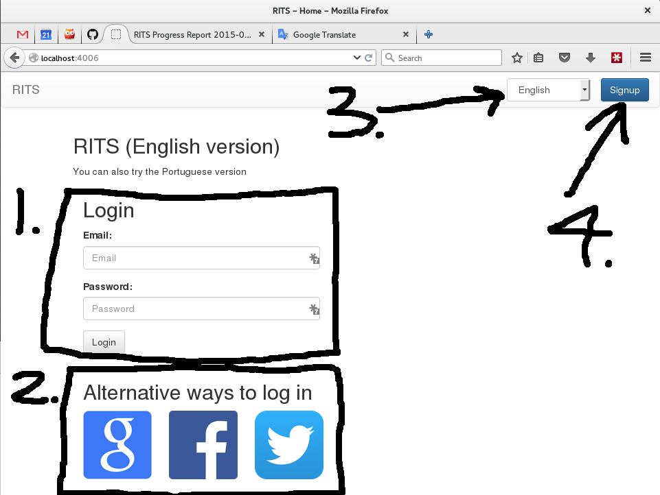
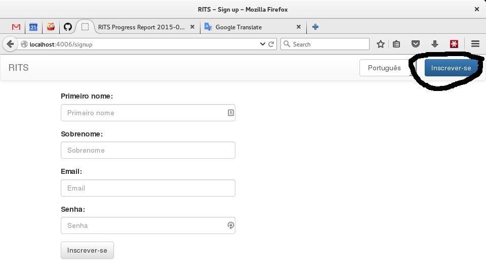
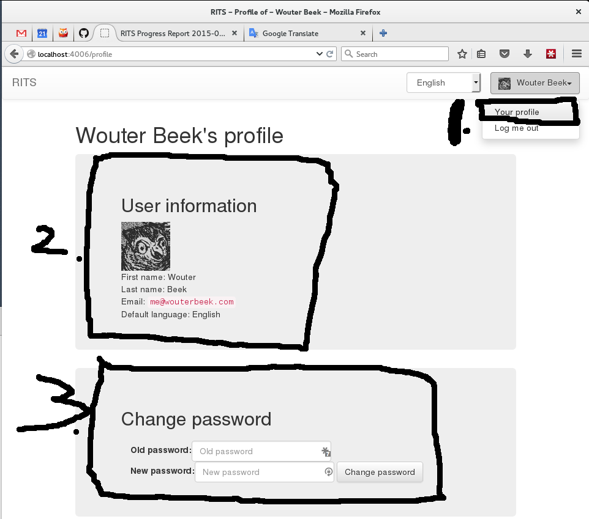
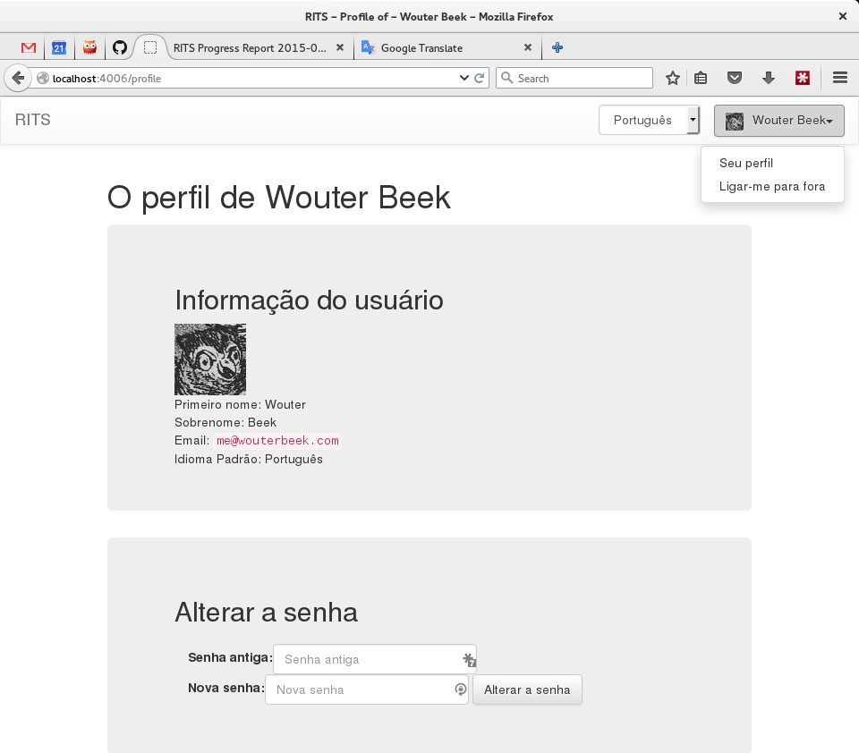
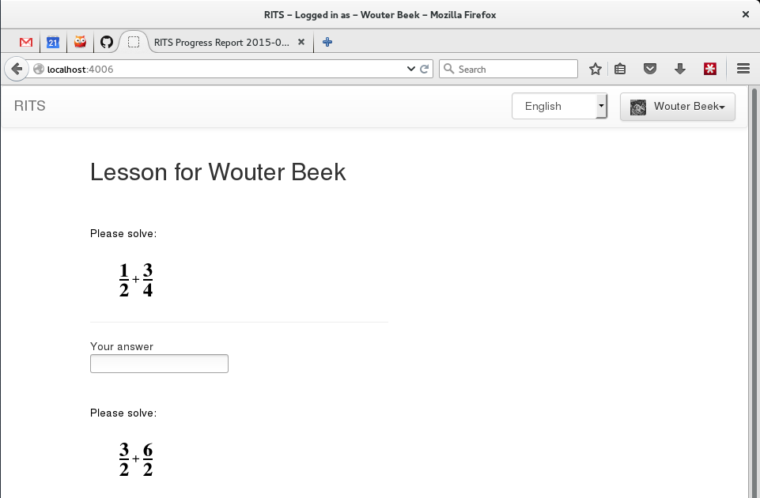

RITS
Progress Report
June 21st, 2015
New homepage
Login was moved to the main page [1].
I'm still working on [2] for alternative login options.
Language option added [3] based on Abel's feedback.
New homepage in Portuguese

Signup page in Portuguese
Added a user profile [1,2] with changeable password [3].
User profile in Portuguese.
Home page after being logged in.
Loads exercises for the user to solve.
TODO
- Translate exercises (use Markus' code)
- The following are easy to implement and test once RITS runs on a proper server:
- Request new password through email
- Login through Google
- Login through Facebook
- Login through Twitter